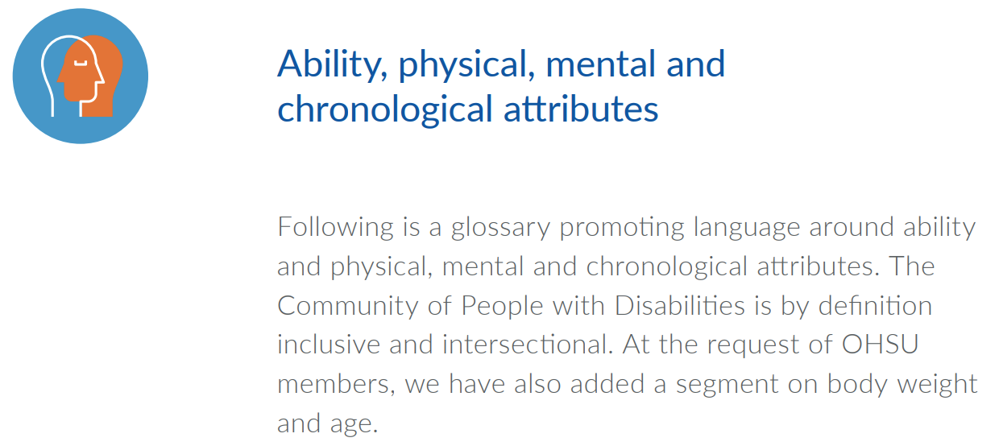
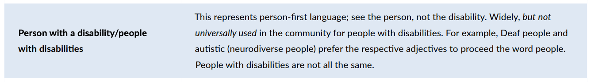
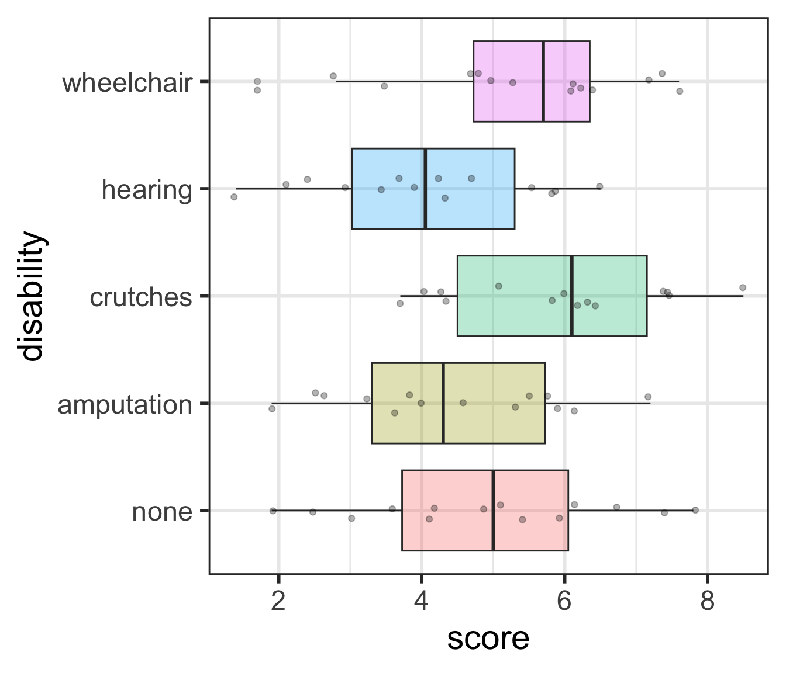
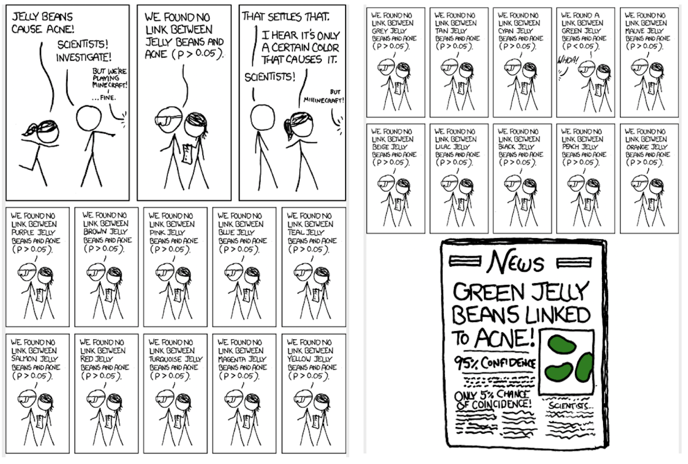
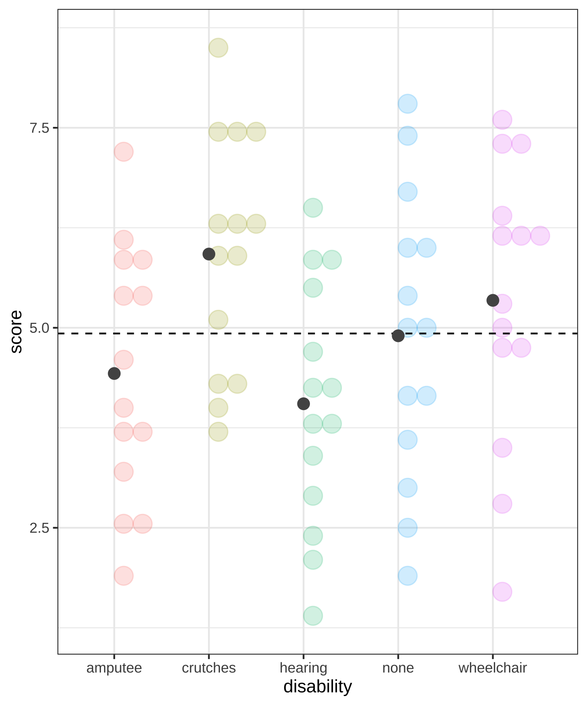
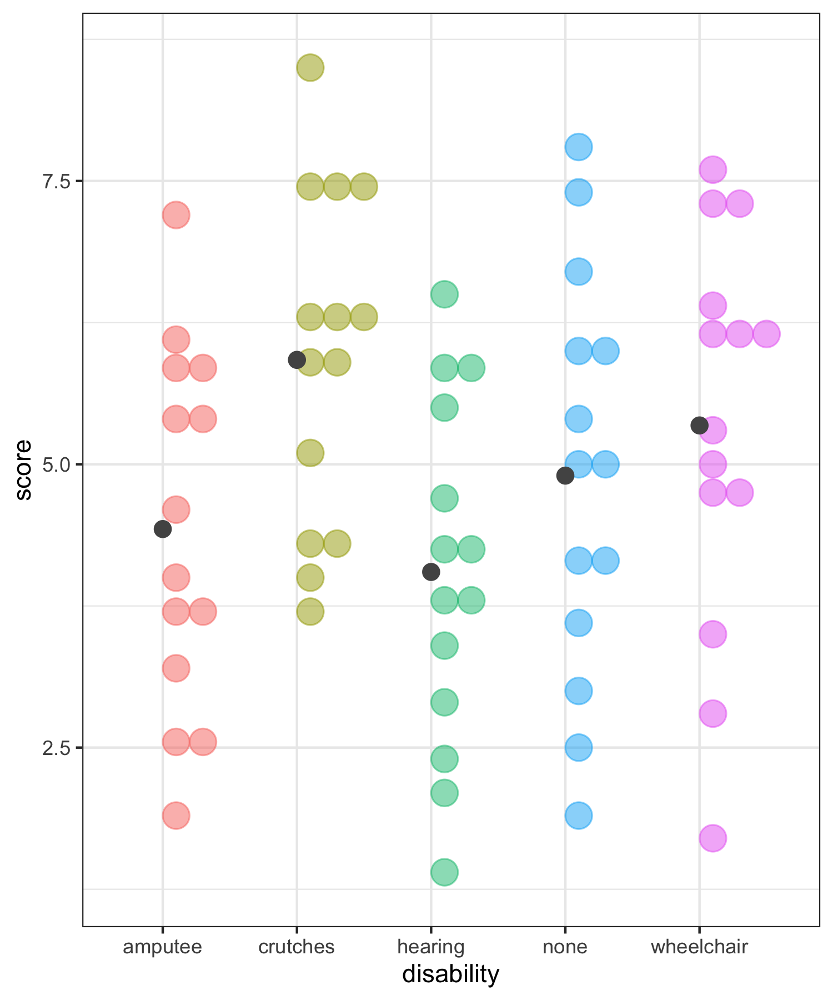
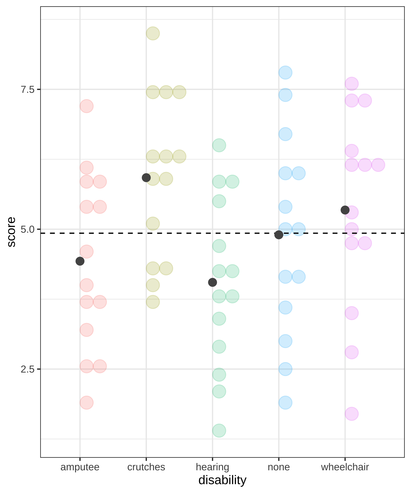
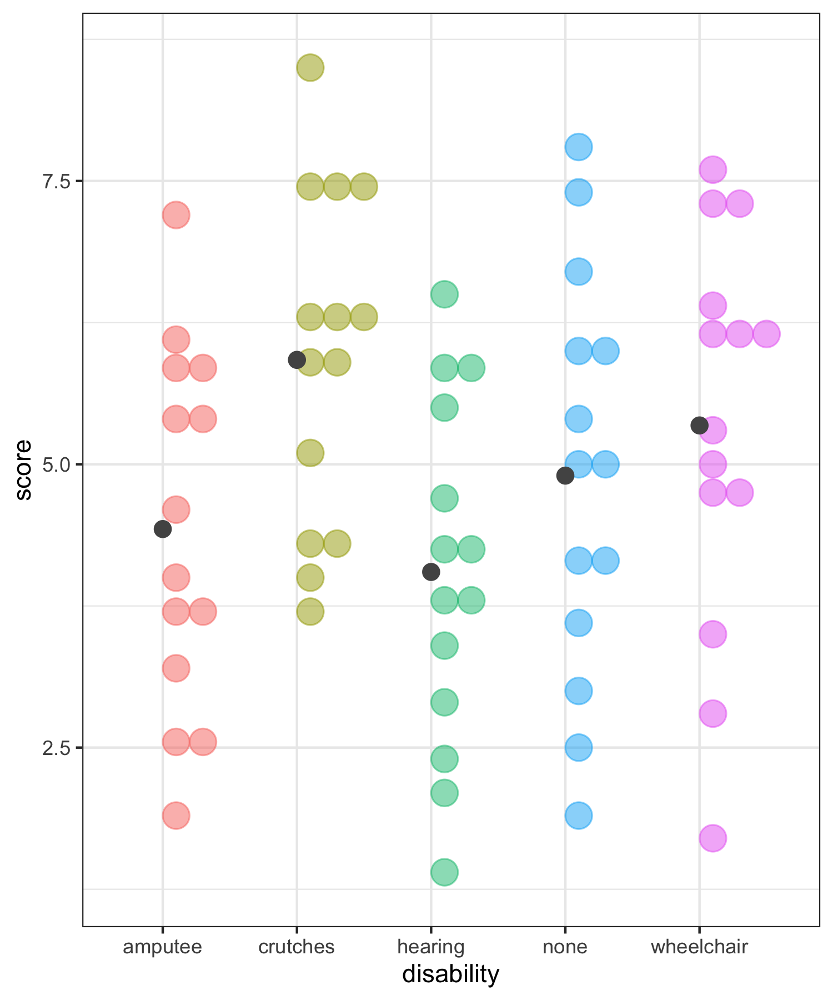

“… an evolving tool to help OHSU members learn about and use inclusive language…”
Sections on: Race and ethnicity, Immigration status, Gender and sexual orientation, and Ability (including physical, mental and chronological attributes)


Factor variable: Make disability variable a factor variable
employ <- employ %>%mutate(# make "none" the first level# by only listing the level none, all other levels will be in original orderdisability =fct_relevel(disability, "none"),# change the level name amputee to amputationdisability =fct_recode(disability, amputation ="amputee") )levels(employ$disability) # note the new order and new name
Hypothetical examples:
In which set (A or B) do you believe the evidence will be stronger that at least one population differs from the others?
Comparing means
Whether or not two means are significantly different depends on: * How far apart the means are * How much variability there is within each treatment group
Questions:
* How to measure variability between treatment groups? * How to measure variability within treatment groups? * How to compare the two measures? * How to determine significance?
ANOVA in base R
empl_lm <-lm(score ~ disability, data = employ)anova(empl_lm)
Analysis of Variance Table
Response: score
Df Sum Sq Mean Sq F value Pr(>F)
disability 4 30.521 7.6304 2.8616 0.03013 *
Residuals 65 173.321 2.6665
---
Signif. codes: 0 '***' 0.001 '**' 0.01 '*' 0.05 '.' 0.1 ' ' 1
\[\sum_{i = 1}^k \sum_{j = 1}^{n_i}(y_{ij} -\bar{y}_{..})^2 = (N-1)s^2_{..}\] where \(N=\sum_{i=1}^{k}n_i\) is the total sample size and \(s^2_{..}\) is the grand standard deviation of all the observations
This is the sum of the squared differences between each observed \(y_{ij}\) value and the grand mean, \(\bar{y}_{..}\).
That is, it is the total deviation of the \(y_{ij}\)’s from the grand mean.
Calculate Total Sums of Squares
Total Sums of Squares:
\[\sum_{i = 1}^k \sum_{j = 1}^{n_i}(y_{ij} -\bar{y}_{..})^2 = (N-1)s^2_{..}\] where \(N=\sum_{i=1}^{k}n_i\) is the total sample size and \(s^2_{..}\) is the grand standard deviation of all the observations
Sums of Squares Error Visually (within treatments)

Sums of Squares Error:
\[SSE = \sum_{i = 1}^k\sum_{j = 1}^{n_i}(y_{ij}-\bar{y}_{i.})^2 = \sum_{i = 1}^k(n_i-1)s_{i.}^2\] where \(s_{i.}\) is the standard deviation of the \(i^{th}\) treatment
This is the sum of the squared differences between each observed \(y_{ij}\) value and its treatment mean \(\bar{y}_{i.}\).
That is, it is the deviation of the \(y_{ij}\)’s from the predicted score by treatment.
Also called the residual sums of squares, or \(SS_{residual}.\)
Calculate Sums of Squares Error (within treatments)
Sums of Squares Error:
\[SSE = \sum_{i = 1}^k\sum_{j = 1}^{n_i}(y_{ij}-\bar{y}_{i.})^2 = \sum_{i = 1}^k(n_i-1)s_{i.}^2\] where \(s_{i.}\) is the standard deviation of the \(i^{th}\) treatment
# A tibble: 2 × 6
term df sumsq meansq statistic p.value
<chr> <int> <dbl> <dbl> <dbl> <dbl>
1 disability 4 30.5 7.63 2.86 0.0301
2 Residuals 65 173. 2.67 NA NA
round(broom::tidy(anova(empl_lm))$p.value[1],2)
[1] 0.03
Use \(\alpha\) = 0.05.
Do we reject or fail to reject \(H_0\)?
Conclusion statement: * There is sufficient evidence that at least one of the disability groups has a mean employment score statistically different from the other groups. ( \(p\)-value = 0.03).
Assumptions for ANOVA
IF the following conditions hold:
the null hypothesis is true
sample sizes in each treatment group are large (each \(n \ge 30\))
OR the data are relatively normally distributed
variability is “similar” in all treatment groups:
Is the within treatment group variability about the same for each treatment group?
As a rough rule of thumb, this assumption is violated if the standard deviation of one treatment group is more than double the standard deviation of another treatment group
THEN the sampling distribution of the F-statistic is an F-distribution
\(H_A:\) variances of treatment levels are NOT equal
_Note: \(H_A\) is same as saying that at least one of the treatment levels has a different variance__
Caution: Bartlett’s test assumes the data in each treatment group are normally distributed. Do not use if data do not satisfy the normality assumption.
bartlett.test(score ~ disability, data = employ)
Bartlett test of homogeneity of variances
data: score by disability
Bartlett's K-squared = 0.7016, df = 4, p-value = 0.9511
Levene’s test for equality of variances is not as restrictive: see https://www.statology.org/levenes-test-r/
The F-distribution
The F-distribution is skewed right:
The F-distribution has two degrees of freedom:
one for the numerator of the ratio (k – 1) and
one for the denominator (N – k)
\(p\)-value:
For F-statistics, the p-value (the area as extreme or more extreme) is always the upper tail.
# p-value using F-distributionpf(2.8646, df1=5-1, df2=70-5, lower.tail =FALSE)
[1] 0.02999488
Which treatment groups are statistically different?
So far we’ve only determined that at least one of the treatment groups is different from the others, but we don’t know which.
What’s your guess?
Post-hoc testing for ANOVA
determining which groups are statistically different
Post-hoc testing: pairwise t-tests
In post-hoc testing we run all the pairwise t-tests comparing the means from each pair of groups.
With 5 groups, this involves doing \({5 \choose 2} = \frac{5!}{2!3!} = \frac{5\cdot 4}{2}= 10\) different pairwise tests.
Problem:
Although test has an \(\alpha\) chance of a Type I error (finding a difference between a pair that aren’t different), the overall Type I error rate will be much higher when running many tests simultaneously.
\[\begin{align}
P(\text{making an error}) = & \alpha\\
P(\text{not making an error}) = & 1-\alpha\\
P(\text{not making an error in m tests}) = & (1-\alpha)^m\\
P(\text{making at least 1 error in m tests}) = & 1-(1-\alpha)^m
\end{align}\]
:::
The Bonferroni Correction (1/2)
A very conservative (but very popular) approach is to divide the \(\alpha\) level by how many tests \(m\) are being done:
\[\alpha_{Bonf} = \frac{\alpha}{m}\]
This is equivalent to multiplying the p-values by m:
\[p\textrm{-value} < \alpha_{Bonf} = \frac{\alpha}{m}\] is the same as \[m \cdot (p\textrm{-value}) < \alpha\] The Bonferroni correction is popular since it’s very easy to implement.
The plot below shows the __likelihood of making at least one Type I error depending on how may tests are done.
Notice the likelihood decreases very quickly
Unfortunately the likelihood of a Type II error is increasing as well
It becomes “harder” and harder to reject \(H_0\) if doing many tests.
Pairwise comparisons using t tests with pooled SD
data: employ$score and employ$disability
none amputation crutches hearing
amputation 1.000 - - -
crutches 1.000 0.184 - -
hearing 1.000 1.000 0.035 -
wheelchair 1.000 1.000 1.000 0.401
P value adjustment method: bonferroni
Since there were 10 tests, all the p-values were multiplied by 10.
Tukey’s Honest Significance Test (HSD) (1/3)
Tukey’s Honest Significance Test (HSD) controls the “family-wise probability” of making a Type I error using a much less conservative method than Bonferroni
It is specific to ANOVA
In addition to adjusted p-values, it also calculates Tukey adjusted CI’s
The function TukeyHSD() creates a set of confidence intervals on the differences between means with the specified family-wise probability of coverage.
# need to run the model as an `aov` instead of `lm`empl_aov <-aov(score ~ disability, data = employ) #<<anova(empl_aov) #<<
Analysis of Variance Table
Response: score
Df Sum Sq Mean Sq F value Pr(>F)
disability 4 30.521 7.6304 2.8616 0.03013 *
Residuals 65 173.321 2.6665
---
Signif. codes: 0 '***' 0.001 '**' 0.01 '*' 0.05 '.' 0.1 ' ' 1
Tukey’s Honest Significance Test (HSD) (2/3)
Both Tukey HSD p-values and CI’s for all pairwise differences.
Pairwise comparisons using t tests with pooled SD
data: employ$score and employ$disability
none amputation crutches hearing
amputation 0.528 - - -
crutches 0.257 0.092 - -
hearing 0.289 0.542 0.035 -
wheelchair 0.528 0.287 0.503 0.134
P value adjustment method: fdr
Multiple testing
post-hoc testing vs. testing many outcomes

https://xkcd.com/882/
Multiple testing: controlling the Type I error rate
The multiple testing issue is not unique to ANOVA post-hoc testing.
It is also a concern when running separate tests for many related outcomes.
__Beware of p-hacking!
Problem:
Although test has an \(\alpha\) chance of a Type I error (finding a difference between a pair that aren’t different), the overall Type I error rate will be much higher when running many tests simultaneously.
\[\begin{align}
P(\text{making an error}) = & \alpha\\
P(\text{not making an error}) = & 1-\alpha\\
P(\text{not making an error in m tests}) = & (1-\alpha)^m\\
P(\text{making at least 1 error in m tests}) = & 1-(1-\alpha)^m
\end{align}\]


 {fig-align=“center” width = “30%”} = {fig-align=“center” width = “30%”} + {fig-align=“center” width = “30%”}
{fig-align=“center” width = “30%”} = {fig-align=“center” width = “30%”} + {fig-align=“center” width = “30%”}